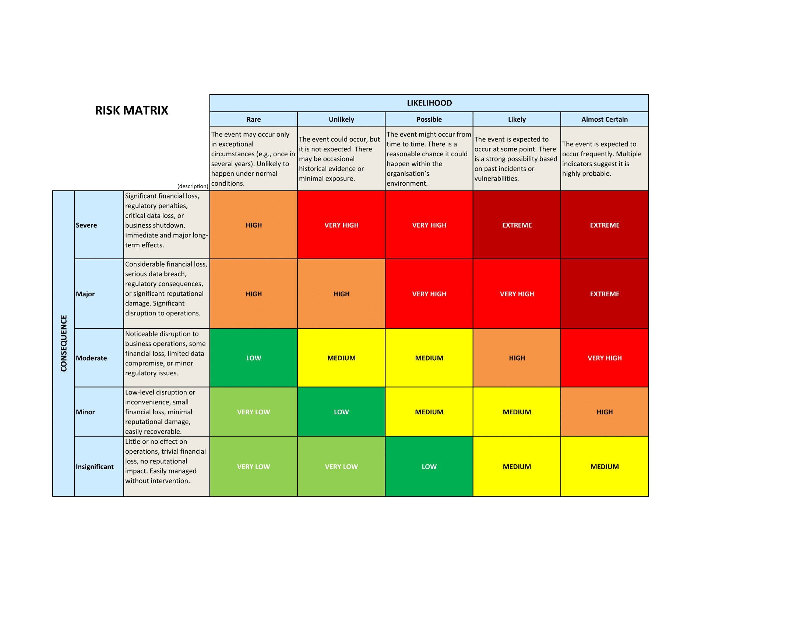
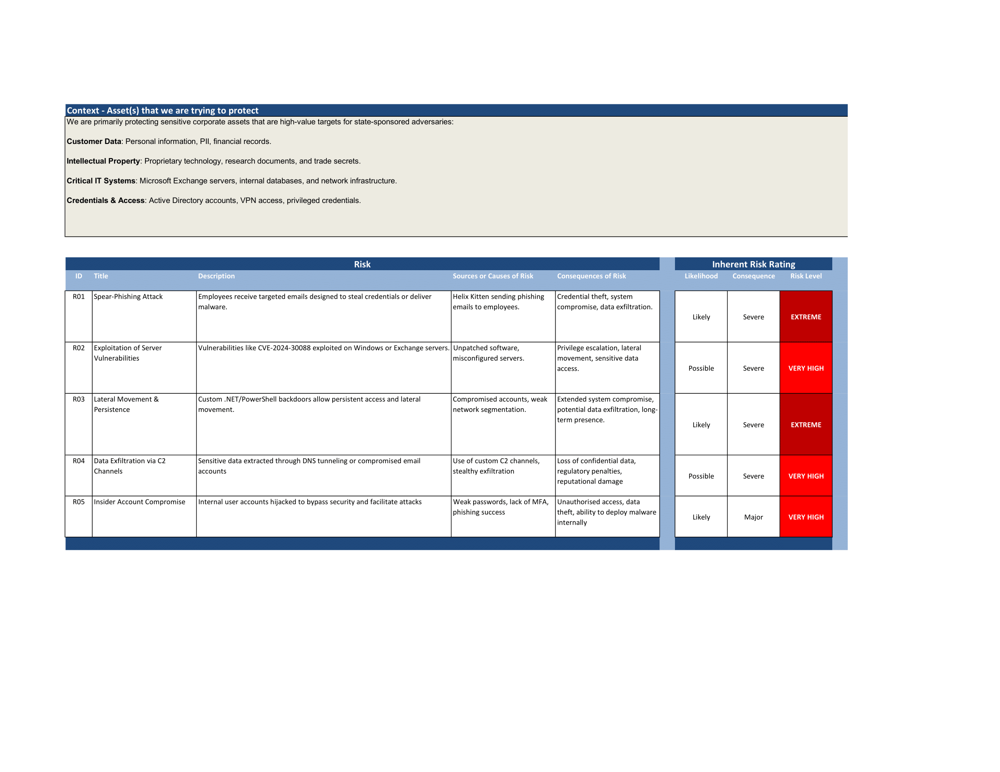
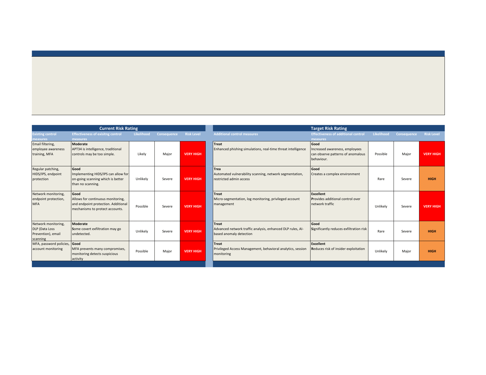

Datacom Cybersecurity Job Simulation Write Up
Oct 09, 2025

This write-up is part of my ongoing write-up series, exploring cybersecurity challenges, and threat intelligence practices utilised in the day-to-day operations of a threat analyst.
Task 1: Adversary Research and TTP's
APT34 is often referred to as Helix Kitten is an adversary who has been active since 2015. It is commonly said that this adversary group is Iranian-aligned[1], targeting aerospace, energy, financial, government, hospitality, and telecommunications industries[2] in the US, UK, China, Turkey, and other countries within the Middle East and North Africa.
Historically, their motivations correspond with Iranian state interests where the group will often strategically focus on exploiting infrastructure frameworks, and intelligence collection, highlighting their commitment to state-sponsored objectives.
Techniques, Tactics, and Procedures
APT34 leverages custom-developed tools that are ideal for maintaining persistence in target systems. These tools ensure operational flexibility within a range of different contexts. They have exploited vulnerabilities including CVE-2024-30088[3] which is a Windows kernel elevation of privilege vulnerability. They have also been known to exploit Microsoft Exchange servers to obtain sensitive credentials, highlighting their successful lateral movement through the network and privilege escalation capabilities.
This adversary has also been known to implement specialised C2 mechanisms, such as deploying a custom DNS tunnelling protocol, which allows them to extract data and enforce their control over compromised systems. In addition, they utilise email-base C2 channels with compromised accounts as a means of disguising their communication with legitimate traffic.
Their expertise is clear with their ability to create custom-built .NET and PowerShell backdoors, which are notably never recycled. This establishes how they're able to maintain persistence, and adapt to changing environments, posing them as a significant threat to affected countries[4].
Security Implementations for Users
Helix Kitten are known to execute spear-phishing campaigns, so advanced email filtering can be employed to ensure that phishing emails never make it to an employees inbox. Training is incredibly important for staff, as employees will be introduced to the common behaviour patterns of such adversaries. Security staff should enforce mandatory MFA to ensure that credentials alone are not sufficient for logging in to company accounts.
Technically, endpoint security can be implemented with Intrusion-Prevention Systems, and Host-based Intrusion Systems employed to detect (HIDS) and prevent (IPS) potential threats from entering the network. Implementing network segmentation can also assist in preventing potential lateral movement within the network by isolating the threat actor to a single, segmented network.
Task 2: Risk Matrix and Assessment



References
[1] CyberWire, "Double-tap ransomware. exim server exposure. oilrig active against saudi arabia, lazarus group against spain. cybersecurity awareness month. notes on a hybrid war.” 2023. [Online]. Available: https://thecyberwire.com/newsletters/daily-briefing/12/188
[2] A. M, “Meet crowdstrike’s adversary of the month for november: He- lix kitten,” 2018. [Online]. Available: https://www.crowdstrike.com/en-us/blog/meet-crowdstrikes-adversary-of-the-month-for-november-helix-kitten/
[3] NIST, “Cve-2024-30088 detail,” 2024. [Online]. Available: https://nvd.nist.gov/vuln/detail\cve-2024-30088
[4] Trustwave, “Inside apt34 (oilrig): Tools, techniques, and global cyber threats,” 2025. [Online]. Available: https://www.trustwave.com/en-us/resources/blogs/trustwave-blog\inside-apt34-oilrig-tools-techniques-and-global-cyber-threats/